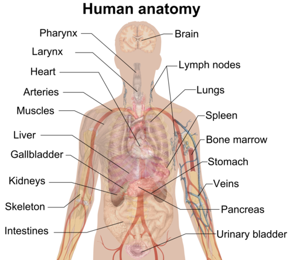
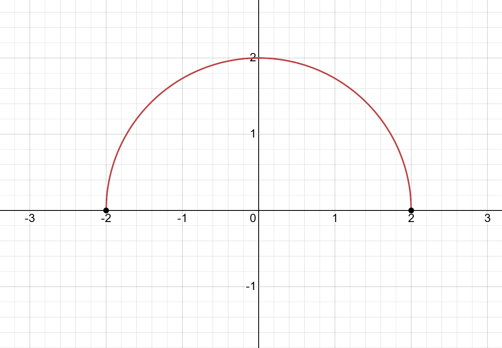
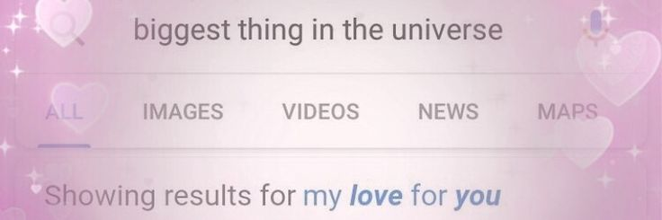

Unsa imo ganahan na body part? Wazz your favorite? Akoa is yes. And your everything.
Akong fav na body nako is mouth. Because izza where i eat. My labi is dry. Okay wait mag butang kog lip balm.
Marahan na pagkurba ng
aking mga labi, sabay sa marahan
mong tingin. Naa nana'y lip balm ako lips haha.
Graph

OHHHH LOOK! What is that?!!! IZZA y=√4-x2 wowwwwwww. Unsa iya graph bi? izza circle. a flattened parabola. izza curve.
I hate that kurba. Soooooo nightmaric hahahaha 14/20 jusko. What? My Fav? whehehe.
Paboritong kurbaaaaa
ang 'yong mga labi.
<3<3<3
<3<3
<3
Yieee. So pretty ouie. Likeee. Bawat hawi mo sa'yong buhok ay lalong lumalalim
ang pagtangi ko sa'yo't aking pagkabighaniiii. 😍 Love gud na guddddd.

Likeee Walang ibang nais aninaginnn. Ikaw liyag ang siyang aakapin. ❤❤❤ Likeeee alwayssss. Awa.
Table
| Days |
| Time |
Sunday |
Monday |
Tuesday |
Wednesday |
Thursday |
Friday |
Saturday |
| ∞ |
∞ |
∞ |
∞ |
∞ |
∞ |
∞ |
Diba dibaaa. Infinite time for Sami eyyy. Bahalag imo ra ko itaboy ari, or imo saputan. Love ghapon mna always akong sami oiii.